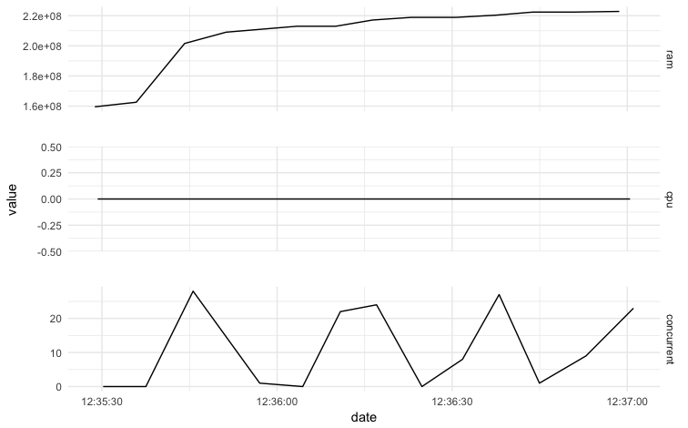
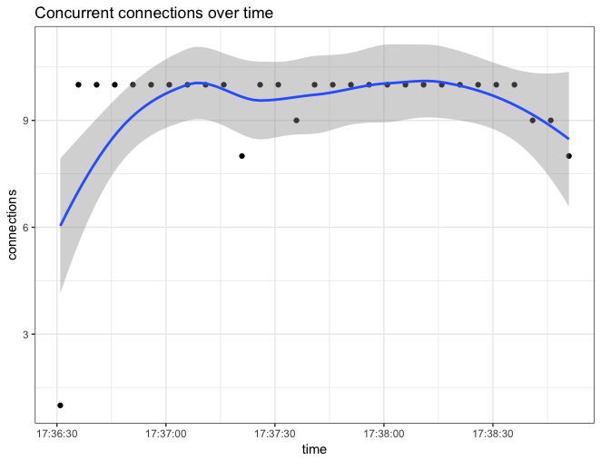

To run a load test from a recording file, use the playback function in proxyrec and optionally the poll function in shinyloadtest.
proxyrec Usage./proxyrec playback --helpThe playback function has a number of options:
<file> The recording file.--target Target URL. This is the root URL of the server, not the full url to the app. An app at http://server.example.com:3939/myApp should use -t http://server.example.com.--duration Targetted test duration, which can specified through a generic string, e.g. ‘5min 30sec’. See guidelines below.--startDelayMs Time to wait between concurrent sessions, used to prevent all concurrent threads running in exact lock step.--outdir The directory to store the resulting test profiles.--pause-mode Whether to include user pauses during playback, see guidelines.shinyloadtest poll Experimental WIPshinyloadtest includes an experimental poll function designed to be run alongside of the proxyrec playback function.
We recommend using RStudio 1.1 which includes support for a Terminal.
The poll function supports RStudio Connect and \TODO SSP. During the course of the load test, the function will ping the server to get usage statistics on CPU, RAM, and server-reported concurrent connections. The information is plotted in real time helping track the progress of the test.

shinyloadtest implements an opinionated approach to load testing that we believe best captures real-world usage.
Tests require 2 fundamental inputs: the targetted number of concurrent users and the desired test duration. During the test, parallel threads will be opened for each concurrent user. Each thread will playback the recorded actions. Once the recording is done, the thread will startover with a new playback. The process is repeated until the end of the test duration. Each playback logs a results file to the output directory.
For a realistic test we recommend:
Including user pauses. Even simple applications can overload a server if actions are taken as fast as possible. Including user pauses gives a much better representation of the realistic load a server can expect while servicing n users. Currently, the playback recorder pauses the exact duration paused during recording. In the future additional options will be added to model differences in user behavior.
Staggering the processes via the startDelayMS parameter. Staggering prevents the concurrent threads from sending requests to the server at the exact same time.
Tests should be long enough for the recording to be played back at least 4-5 times. During analysis, the first and last test results for each thread are often truncated, and there should be enough data in the middle to reasonably estimate latencies.
